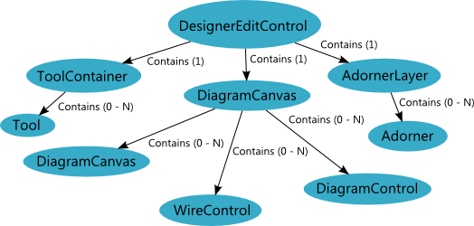
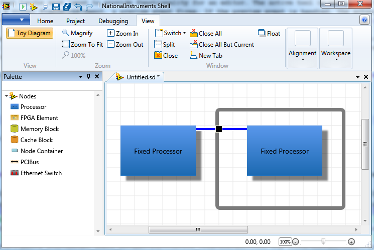
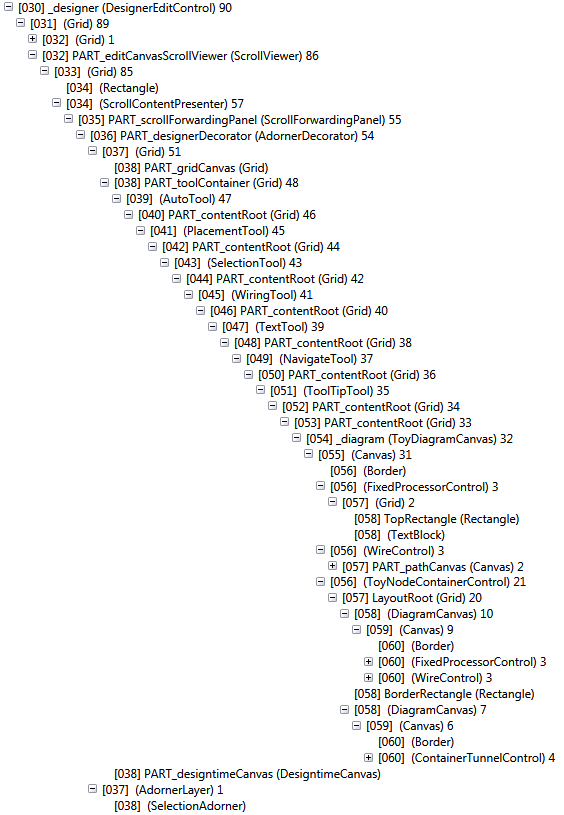

The Diagram Editing System
The Diagram SDK diagram editing system is responsible for displaying and editing source file documents as graphical diagrams.
Diagram Editing System Architecture
The following diagram illustrates the high-level architecture of the diagram editing system.

Diagram Editing System Theory of Operation
The document system uses the diagram editing system to edit Documents that are based on the Diagram Object Model. When you create a DocumentEditControl to edit a DiOM-based document, the DocumentEditControl should use a DesignerEditControl to display the document's diagram and manage adorners and tools that the end user can interact with to edit the document's diagram.
Model Visualization Process
In order to visualize model Elements, the diagram editing system performs the following sequence of operations:
- The Designer system listens to the model via IModelObserver.
- Upon a ViewElementParentViewModel seeing a component added to its model, it starts the process by asking the DesignerEditControl to find or create a viewmodel for that model.
- This is done via the MEF plugin interface IProvideViewModels.
- Once the appropriate ViewModel is created, it is added to the ViewElementParentViewModel’s child VewModels.
- The new ViewModel is asked for its view via CreateVisualControl.
Providing Custom Visuals
Visual tree size is of critical importance to WPF performance. Creating views is slow. Reparenting hierarchies is slow. This led the PlatformFramework to develop the VirtualCanvas, so we only show models that are within the user’s field of view. This, as well as a desire for cross-platform UI definition, led to the following recommended way of implementing your visualization based on the NineGridData format.
- CreateVisualControl returns a new DiagramControl by default.
- The DiagramControl is bound by default to an enumerable of NineGridData via the RenderData property.
- By overriding RenderData, you can provide custom visual assets in the form of NineGridData paths.
Adorners and Tools
One of the document system's primary roles is to manage adorners and tools, which are the primary mechanisms by which the end user edits diagram documents.
Adorners are created as part of an AdornerLayer on the DesignerEditControl.EditPanel. While you can add and remove elements directly on the AdornerLayer, it is generally necessary to use the AdornerManager to add and remove adorners. The AdornerManager manages adorners being added and removed, and allows temporary hiding of adorners. For example, when the user drags a node, we hide the adorners.
Tools are controls in the visual tree hierarchy that handle user input to provide functionality for an editor. The active tool is managed by the DesignerEditControl. Most tools use preview events to intercept the event before it would proceed further. When a user clicks a visual FrameworkElement, a preview event fires. If the preview event is handled, the actual event is never sent. This is why clicking on a button just selects it instead of causing the button to click, unless the OperateTool is active.
Tools appear as a hierarchy of children below the DesignerEditControl. This hierarchy roughly correlates to priority. For example, as a mouse movement event travels down the hierarchy, the wiring tool has the opportunity to intercept it before the text or selection tool. Generally, there is only one active tool at a time. However, the AutoTool encompasses a set of sub-tools, using a weighting system to set the order in which the sub-tools receive user events.
The Diagram SDK provides a set of built-in tools you can leverage and an IDesignerTool interface you can implement to create your own tools.
Diagram Editing System Visual Tree
The diagram editing system's visual tree hierarchy starts at the DesignerEditControl and ends with the controls on the inner-most nested diagram. For example, assume take the following Toy diagram.

The following screenshot generated by Snoop shows the diagram editing system's full visual tree hierarchy for this Toy diagram.

Note the basic structure of the diagram editing system:
- DesignerEditControl
- ScrollViewer
- AdornerDecorator
- Tool Container (Grid)
- Tools
- RootDiagramCanvas
- Tools
- Tool Container (Grid)
- AdornerLayer
- Adorners
- AdornerDecorator
- ScrollViewer
Also, note how the individual tools are nested within one another. This tool hierarchy, determined by the order in which you add tools to the list returned by DocumentEditControl.CreateDefaultTool method, reflects the order in which tools receive the opportunity to handle user events. Finally, note how the visible diagram controls map to the visual tree:
- ToyDiagramCanvas
- FixedProcessorControl
- WireControl
- ToyNodeContainerControl
- DiagramCanvas (nested diagram)
- FixedProcessorControl
- WireControl
- DiagramCanvas (border diagram)
- ContainerTunnelControl
- DiagramCanvas (nested diagram)
Primary Classes that Participate in the Diagram Editing System
DesignerEditControl
The DesignerEditControl class performs the following functions:
- Contains a RootDiagramCanvas
- Creates and manages adorners
- Creates and manages tools
- Helps with selection and adorner management
- Provides zoom capabilities
- Provides a ScrollViewer to scroll content
- Manages the model to visual map
- Provides the DesignerEditControl.TryGetVisualForModel method, which takes a model Element and returns its associated visual FrameworkElement
Tip: You can access the DesignerEditControl from any visual below it in the visual tree by calling the DesignerEditControl.GetDesigner method.
RootDiagramCanvas : DiagramCanvas : OffsetCanvas
When creating a diagram, the DesignerEditControl is intended to work with an OffsetCanvas, which provides an editing surface in the form of a Panel with no size limit that can be scrolled using a ScrollViewer. The DiagramCanvas class derives from OffsetCanvas and adds diagram functionality. Its primary use is to facilitate the binding of model elements to data templates. The RootDiagramCanvas class derives from DiagramCanvas and therefore inherits the binding features of the canvas as well as acting as the root of a hierarchy of FrameworkElements that are data bound to model elements. You can derive your own type from RootDiagramCanvas if your root diagram requires special features. However, this level of customization is not generally necessary.
AutoTool
The AutoTool allows the wiring, selection and placement tools to be active in the visual tree, receiving events in priority order. This order is defined by the order of the elements in the AutoTool's Tools collection.
NavigateTool
The NavigateTool allows the user to use the mouse to click and drag to scroll around the OffsetCanvas like a map, instead of drag selecting elements. Like the OperateTool, this tool turns off preview events.
OperateTool
The OperateTool allows the user to manipulate their controls as they would at runtime. This tool stops the other tools from receiving preview events, preventing user events from reaching the controls themselves. Thus, when you click a combo box, instead of the SelectionTool selecting it, the combo box actually receives the event and drops down.
PlacementTool
The PlacementTool places nodes from a DesignerPalette. This tool includes the following functionality:
- It takes the XML representation of a node from a PaletteElement and creates the model representation using the appropriate parser.
- It interactively displays placement activity in progress, performing parenting when appropriate to place the given node on the correct diagram. For example, when the mouse passes over a structure during a placement operation, the placement tool indicates that the dropped item would be dropped in that structure if the placement operation ended immediately.
- It fires the PlacementToolRelease event when placement finishes (success or failure/cancel) and notifies IPlacementNotify implementers to give them the opportunity to provide post-placement behavior.
- It works with placement plug-ins to provide custom placement semantics. For example, most shapes on the LabVIEW Web UI Builder palette provide interactive text to explain to the user how to create the shape with a sequence of clicks. This is accomplished using the IPlacementHelperTool interface, defined on a placed item, and the IPlacementHelperMasterTool interface, defined on the PlacementTool.
- It can be canceled with the escape key, or by clicking outside of the diagram.
SelectionTool
The SelectionTool manages the selection of elements. This tool includes the following functionality:
- It sends an event when selection changes. Other parts of the UI react to this event. For example, the ribbon and the properties grid update to reflect the current selection.
- It manages the selection adorner and any custom adorners provided by the selected elements. The selected item can also provide adorners, either by push, using the IPushAdornerFactory and IDesignerToolAdorner interfaces, or by pull, using the ISelectableItem interface's GetSoftSelectAdorners and GetHardSelectAdorners callbacks.
- It manages the movement of selected elements, including copy-paste semantics - Ctrl+Drag on an element to create a copy and Ctrl+Drag in empty diagram space to create additional space.
- It tags selection on transactions so that undo/redo can return the program to the previous selection state.
TextTool
The TextTool provides text editing behavior for text elements such as TextBlock, ComboBox, etc. Because of the way we implement tools, using a TextBox in a diagram node does not work, as the click is intercepted. Instead, we use the TextTool and its attached properties and interfaces to allow the user to edit text.
WiringTool
The WiringTool provides visual wiring semantics. This tool includes the following functionality:
- It displays a small lollipop-like terminal adorner and terminal description when the mouse is near a Terminal.
- It displays all the terminal adorners for a node when the mouse is over the node.
- It starts a wiring operation and manages the wiring transaction as the user clicks to create tack points.
- It finishes a wiring operation when the user clicks on a terminal or wire.
- It cancels a wiring operation when the user presses the escape key, double-clicks on the diagram, or clicks outside the diagram.